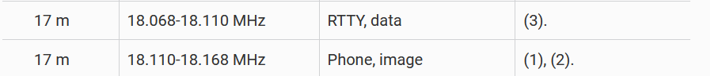

As I read Part 97, the upper edge of data emissions is 18.110
MHz. Is there another reference that supersedes this information?
Title 47, Chapter I, Subchapter D, Part 97, Paragraph 97.305 Authorized emission types:

73, Bill
N6WS
After a long entailed discussion off list; the enforcement of a band plan comes down to these points that I seek to clarify, not argue (or extend further).
1) The FCC has delegated to the ARRL the low level enforcment of all things Part 97 (signed MOU). (But the band plan isn't part of part 97.)
2) The 'charge' pushed up to the FCC if the 'corrective letters' are not followed, won't be a violation of the ARRL band plan (it's not law); it will be 'willful interference', which IS in Part 97. The FCC will determine if the band plan posted, has merit and since they haven't (ever) commented on it, one can presume they do/will think it has merit.
You won't win and it may be an expensive lesson.
Use the most current ARRL band plan as your guide in the US (some of the pages on the ARRL site are well out of date but kept for historical purposes I'm guessing), stay within the lines.
https://www.arrl.org/files/file/Regulatory/Band%20Chart/Band%20Chart%20-%2011X17%20Color.pdf
73,
Rick nk7i
_______________________________________________
Chat mailing list
Chat@ncdxc.org
http://mail.ncdxc.org/mailman/listinfo/chat_ncdxc.org
-- 73, Bill N6WS